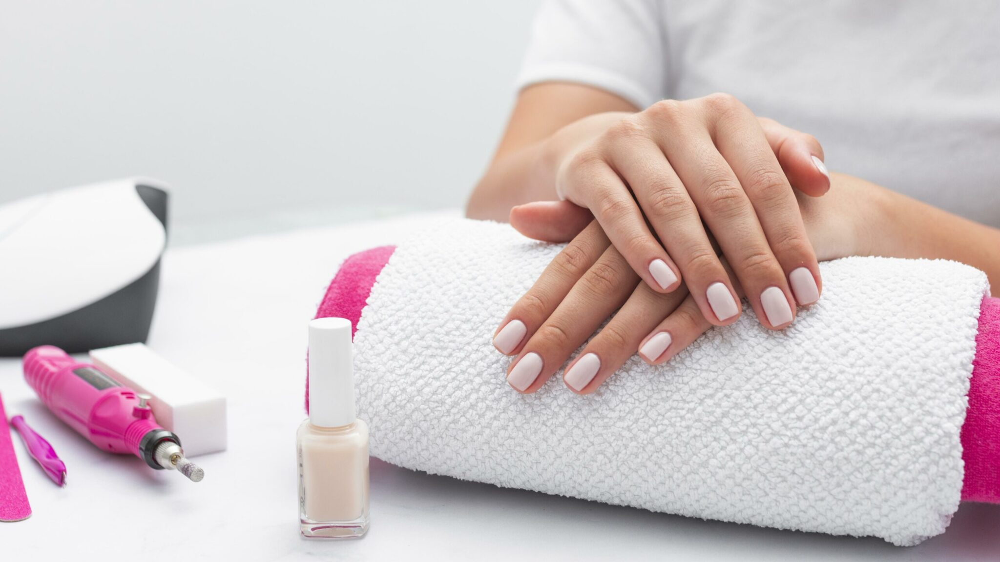

Acerca del Blog
Este blog está dedicado a tí, que eres una apasionada por este mundo, aprenderás la historia y conceptos de este mágico mundo, ¿te animas a conocerlo?.

¿Sabías la...?
-
💅 Historia y Cuidado de las Uñas 🌟
-
💅 Tendencias de Uñas en los Últimos Años 🌟
💅 Manicura en la Actualidad: ¡Un Mundo de Opciones! ✨
💎 Uñas Acrílicas
- Perfectas para alargar y personalizar.
- Se crean mezclando polvo acrílico con un líquido especial, que se moldea en la uña.
- 💡 Ideal para quienes buscan durabilidad y diseños extremos.
💅 Uñas Semipermanentes
- Esmalte que dura entre 2-3 semanas sin descascararse.
- Se fija con lámparas LED o UV para mayor resistencia.
- 💡 Perfectas para quienes quieren practicidad con estilo.
✨ Uñas de Gel
- Más ligeras y flexibles que las acrílicas.
- Aplicadas capa a capa y endurecidas con lámpara UV.
- 💡 Dan un aspecto natural, ideal para quienes prefieren comodidad.
🔷Uñas con Fibra de Vidrio
- Se utiliza una malla de fibra para reparar o alargar uñas.
- Muy resistentes y más ecológicas que las acrílicas.
- 💡 Perfectas para una apariencia fina y elegante.
🎨 Tendencias actuales
- Diseños minimalistas 🖌️ o maximalistas con glitter, foil y pedrería 💎.
- Técnicas como baby boomer (degradado) o uñas cromadas 🌈.
- ¡Personalización total al alcance de tus manos!
- ~ Origen antiguo: Las manicuras comenzaron hace más de 5000 años. Babilonios usaban herramientas de oro 🏺, y Cleopatra teñía sus uñas con henna 🌿.
- ~ Jerarquía de color: En Egipto, faraones y nobles lucían colores vivos, mientras esclavos usaban tonos sutiles. 🖌️
- ~ Esmaltes pioneros: En los años 1920, surgió la manicura francesa 🤍, y en 1932, los hermanos Lechmann lanzaron la primera laca de uñas 🎨.
- ~ Avances modernos: En los 70 nacen los estudios de manicura 💼, y en los 80, la técnica de fotopolimerización 💡.
✨ Dato curioso: Tus uñas crecen hasta 1 mm por semana, ¡y están hechas de queratina! 🧬 🚫 Morder o cortar mal las uñas puede causar infecciones 🦠. ¡Cuidarlas es más que estética, es salud! 🌈
- ✨ Minimalismo chic: Colores neutros como nude, beige y blanco 🕊️ se han convertido en un básico elegante.
- 🌈 Arcoíris y tonos pastel: Uñas de diferentes colores 🌸, especialmente en tonos suaves, han arrasado en redes sociales.
- 💎 Decoraciones glam: Pedrería, foil metálico y perlas 🪩 están en todas partes, desde uñas largas hasta cortas.
- 🎨 Arte en miniatura: Diseños personalizados como flores, líneas abstractas y dibujos diminutos 🖌️ son la tendencia favorita de los amantes del nail art.
- 🌌 Efectos especiales: Uñas cromadas, holográficas y en acabado terciopelo 🪞 han dado un giro futurista a la manicura.
- 🖤 Estilo “clean girl”: Uñas cortas y saludables, con un brillo natural o un esmalte transparente 🌿, son un “must” para quienes aman lo sencillo.
- 📈 Tendencias virales: Desde las uñas “lip gloss” 💖 hasta las inspiradas en celebs, como las milky nails de Hailey Bieber 🥛, el estilo en uñas sigue siendo un arte en evolución.
👉 Bonus: La sostenibilidad 🌱 gana terreno con esmaltes veganos y técnicas respetuosas con el medioambiente. ¡Manicuras con conciencia!
Hoy en día, la manicura no solo es estética, ¡es toda una ciencia del cuidado y estilo! Aquí te contamos los tipos más populares:
👉 Recuerda: Cada técnica tiene sus pros y contras. Elige según tu estilo, necesidades y cuidado personal. 🌿 ¿Qué estilo es el tuyo? 😊
💅Tabla de Precios Promedio para Manicura en Ecuador (2024)✨
| Servicio | Precio Aproximado | Detalles |
|---|---|---|
| Uñas Acrílicas | $20 - $45 | Personalización disponible; diseños elaborados pueden costar más. |
| Uñas de Gel | $15 - $35 | Acabado natural, más ligeras que las acrílicas |
| Esmalte Semipermanente | $12 - $25 | Duración de 2-3 semanas, ideal para practicidad. |
| Uñas con Fibra de Vidrio | $30 - $50 | Duraderas y resistentes; requieren mantenimiento frecuente. |